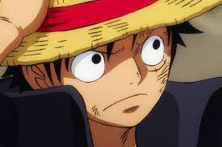
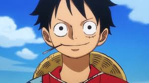

La vida de luffy
Luffy nació en el East Blue en la aldea Fushia. Desde temprana edad, Luffy mostró un fuerte sentido de aventura y deseo de explorar el mundo. Su vida cambió cuando accidentalmente comió la "Gomu Gomu no Mi", una Fruta del Diablo que le otorgó la habilidad de estirar su cuerpo como una goma.
Inspirado por Shanks el Pelirrojo, un pirata que lo salvó de un monstruo marino y le dio su icónico sombrero de paja, Luffy decidió convertirse en un pirata y alcanzar su sueño de encontrar el One Piece. Su motivación principal es la búsqueda de la libertad, aventura y emoción en los mares, así como la posibilidad de reunirse con Shanks y devolverle su sombrero.
Luffy es conocido por su personalidad alegre y despreocupada, así como su determinación implacable en la búsqueda de su sueño. Su habilidad de la Fruta del Diablo le otorga la elasticidad, lo que le permite usar una variedad de técnicas y movimientos elásticos en combate.
A medida que avanzan, Luffy y sus compañeros luchan contra los Siete Guerreros del Mar, enfrentan al Gobierno Mundial y a la Marine, y forman alianzas con otros piratas poderosos. A lo largo de sus aventuras, Luffy se gana la reputación de desafiar a los más fuertes y cambiar el curso de la historia.